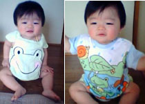
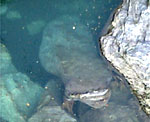
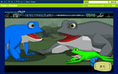

全身カエル英才教育！カエラーの子はカエラー爆発！ 【東京発ゆかちん同志記者】♪１０月２６日に１歳になったばかりの息子です☆かえるファッション写真送りますね〜(^-^)V息子は、衣服だけでなく、かえるグッツにも囲まれています！IKEAの食器＆エプロンがお気に入りです！ ジンベイも♪ボタンが着いていて口が開きます！かわいいです♪お口を開いている所です！音符が飛んでてかわいいですよ♪ 自由が丘ＦＲＯＧＳのかえるグッズオンラインショップにベビー用おもちゃがありました！みんなとってもかわいいので何を手に入れようか迷ってます(^_-)
カエル育児はゆかちんに学べ！【全国かえる奉賛会】ゆかちん同志の育児を全面的に支持するぞおお。全国のカエラーの親は、いますぐに、ゆかちん同志の正しい育児を学び、ほかの動物の衣服をすべてカエルに変えよう！その気になって探すと、赤ちゃん本舗や西松やで、かえるグッズばかりでそろえることは可能なり。あとは、精神もカエル主義を注入して、成長するにつれて先進的かえる主義者を育てるのだああああああああああああ。実用派ガマ口カエラー出現！【福岡発ピョン吉はずき同志記者】お気に入りのガマ口です。カエル財布を持っているけど、実用にしている人は少ないのでは！しっかしいいい。わたしぴょん吉は実用品としてつかっています。コンビニで、チョコレートを購入するときなど、ガマ口からおもむろに小銭を取り出すと、ちょーかっこいいんですよ！サラリーマンのおじさんとか、これで昼食代とか払っていたら、とっても素敵いいいい
【全国かえる奉賛会】というわけで、サラリーマンのみなさあああん。奥さんに頼み、ガマ口をかってもらおう！部下に昼食をおごるときなどに、とってもスマートになるはずだ。
強運なり！こるげんカエルのケロちゃんゲット！【福岡発こるげんレディー様】きょう、素晴らしいできごとがありましたので、御報告致します。さる薬局で薬品を買い求めたところ、くじ引きがあり、そのくじ引きで、見事に、こるげんケロちゃんストラップをゲットしたのです！！！！
【全国かえる奉賛会】おおおおおおーなんて素晴らしい籤運なのであろうかああああ。宝くじなどで一億円当たるよりも素晴らしいできごとである。みんなで祝福しようではないかああああ。
巨大な「岩蛙」が潜んでいたああ！ 【埼玉発ケロヒロ同志記者】先日のこと、秋の秩父路を散策に行ったときのことです。日本オオカミで有名な、三峯神社のお参りをして、その帰り道のこと。神社の参道から下りてきて、三峰川にかかる橋の上から、眼下に広がる紅葉の渓谷美に見とれていたときに、ふと気がつきました。あれ？川の中に、頭を上流に向けた、巨大な「岩蛙」が潜んでいるではないかぁぁぁ・・・よくよく見れば、顔も手も後ろ足までも、ちゃんとある正統派の蛙なのである。カエラーならば、三峰神社に是非ともお参りに行き、岩蛙の神様にも手を合わせてこようではないか！！
【全国かえる奉賛会】すごおおおおおおい！！カエルの化身なりいい。よくぞ発見したものである。これもケロヒロ同志が日頃から研鑽に努めていた成果であろうぞ！
カエルゲームが登場！ 【千葉発ろばあと同志記者】shockwave.comにKaeru Steppaというゲームが登場してますよ。めっちゃかわいいカエルをリズムにあわせてジャンプさせ，障害物を越えていくゲームです。カエルの動きがキュートでオススメです！ 無料だし登録もいらないから，ぜひ一度遊んでみてください．オープニングムービーもオススメ。あまりのかわいさに，ゲーム忘れて見入っちゃいますよ。
添付したのは，そのオープニングの一場面をキャプチャしたものです．
げこげこ大王，新聞これからも楽しみにしてます。 カエル新聞縮刷版は年内に発行へ！朝日新聞縮刷版とともに、図書館に並ぶ日も近いであろう。年内発行だからなー。みんな、これまで以上に「かえる新聞」での報告をまっていてくれえええ。 ところで、縮刷版は、過去の全部の新聞を収録したいところぢゃが、収録件数の制限があって、全部とはゆかないのぢゃ。大王が選択するので、まかせてほしいのだが、もしも、投稿したねたが、縮刷版に収録するのは、ちょっとなーと思っている人は、早めに教えてほしい。大王あてメール→大王様へのメールwakuro-3@hf.rim.or.jp
収録からはずすこともできます。 福岡かえる展７北条けお同志が執権に就任！ 【福岡かえる展７実行委員会】来年も福岡かえる展７を開催することに決定しました。その前に来年２月には、第２回冬のお絵書き展をするんだけどね。
【福岡かえる展７実行委員会】来年も福岡かえる展７を開催することに決定しました。その前に来年２月には、第２回冬のお絵書き展をするんだけどね。今回は、大王がなにかとあわただしいため、大王代行＝執権＝北条けおさんの指導のもと、Ｅ３さんが３期連続の実行かえる委員長（旧称；実行委員長）として、楽しい企画を展開してくれるぞおおお。 音楽カエルと一緒にチケット？！【福岡発らあめん大魔王様】音楽カエルと一緒にエレグラチケットをゲットしよう！“年利15.0〜18.0％+限度額300万円という広告を発見しました。
【全国かえる奉賛会】いただいたアドレスをなくしてしまったああ。誰か続報を待つ！
携帯で携帯＠カエル新聞を吸い取ろう！ 【全国かえる奉賛会】携帯から初めてカエル新聞を見たいというひとにとっては、アドレスを打つのが難儀なものよのう！そこでドコモとボーダフォンの一部機種から、カメラをかざしてコードを読みとるんぢゃああ。なお、このQRコードを眺めていたらカエルやらオタマジャクシやらが浮かび上がってくるらしいぞおお。ほんとかああ。
【全国かえる奉賛会】携帯から初めてカエル新聞を見たいというひとにとっては、アドレスを打つのが難儀なものよのう！そこでドコモとボーダフォンの一部機種から、カメラをかざしてコードを読みとるんぢゃああ。なお、このQRコードを眺めていたらカエルやらオタマジャクシやらが浮かび上がってくるらしいぞおお。ほんとかああ。
|
メールマガジン登録
メールマガジン解除
Powered by


かえる古新聞過去に取り上げた記事を見出し付きで一覧したい人は、ここをクリック◆創刊号を見る◆先週号を見る◆話題の号を見る◆かえる新聞の昔を読む
|
私も入っています。。全国かえる奉賛会
大王様に会うには、このバナーをクリック。ずっと奥に写真館があるぞ。全国かえる奉賛会に入会するには、自分のホームページのどこかに、下の部分を追加するとバナーがリンク付きで表示されるぞ。どんどん入会しましょー |


|